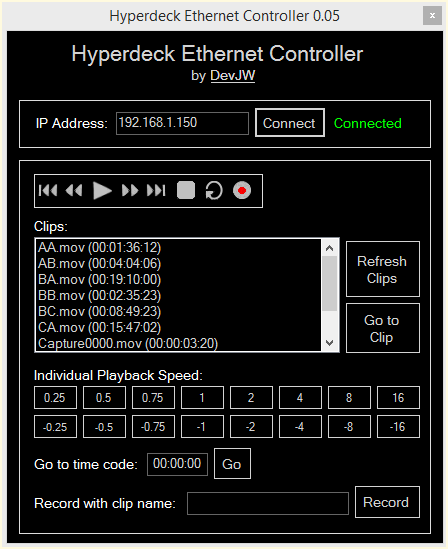

HyperDeck Controller for Windows

Remote control your Blackmagic Design™ HyperDeck Studio device from your Windows PC.
Send simple commands to your HyperDeck such as Play, Stop and Record.
Get to your content quickly with the "Go to timecode" and "Go to clip" features.
Record clips with a custom name.
Control your playback more finely with individual buttons for different speeds.